[ 01 / 04 ] · Позиционирование на рынке
Точность до 2 мм
Лазерное сканирование и инженерная геодезия.

S-00 · Title Block · Digital Survey LabСоздаём цифровую копию объекта на базе облака точек, реверс-инжиниринга и BIM-моделирования до уровня детализации LOD 400.
[ 01 / 04 ] · Позиционирование на рынке
Лазерное сканирование и инженерная геодезия.
[ 02 / 04 ] · Производственная экспертиза
Полный цикл: облако точек → BIM → РД.
[ 03 / 04 ] · Достижения команды
Промышленные, гражданские и инфраструктурные проекты.
[ 04 / 04 ] · Широкий профиль
Единый подрядчик на весь цикл объекта.
01
Мы ведём проекты в логике цифровой экспертизы: проверяем не только листы, а целостность ЦИМ — геометрию, атрибуты, иерархию, коллизии и связность решений между дисциплинами.
Такой подход сокращает цикл согласований, снижает количество замечаний и повышает предсказуемость сроков на этапе строительства.
02
Основной формат выдачи — IFC4. Параллельно сохраняем нативные модели (RVT/PLN) для глубокой технической проверки и быстрого уточнения спорных мест.
03
Для проектной стадии мы ведём модель на уровне LOD 300, а по узловым зонам поднимаем до LOD 350/400, когда это действительно влияет на координацию и стоимость.
04
05
06
Мы связываем сметные позиции с элементами модели, чтобы количество работ обновлялось автоматически при изменениях в проекте.
Это снижает риски расхождений между проектом, сметой и фактическим выполнением на стройке.
07
08
Мы объединяем BIM-моделирование, геодезию, стройконтроль и инженерную экспертизу в одном контуре, чтобы проект проходил путь от данных к реализации без потери качества.
Программы и оборудование
Используем связку геодезических приборов, BIM-платформ и специализированных систем обработки облаков точек — от полевых измерений до проектной модели и отчёта по отклонениям.
BIM и документация
Autodesk AutoCAD, Autodesk Civil 3D, Autodesk Revit.
Облако точек
Autodesk ReCAP, Trimble Perspective, Trimble RealWorks.
Контроль и визуализация
Trimble Cyclone 3DR, Autodesk 3DS Max.
Тахеометрия
TS07i, TS16.
Лазерное сканирование
Trimble X7, Leica P50, CX12, SLAM-решения.
Аэрофотосъёмка
Дроны, квадрокоптеры, БПЛА самолётного типа.
Выберите удобный способ — перезвоним за 20 минут или подготовим предложение под ваш объект.
Оставьте номер — проконсультируем по вашему объекту.
Подробно
Расскажите об объекте — подготовим техническое предложение и дорожную карту.